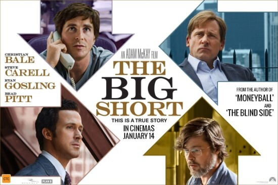
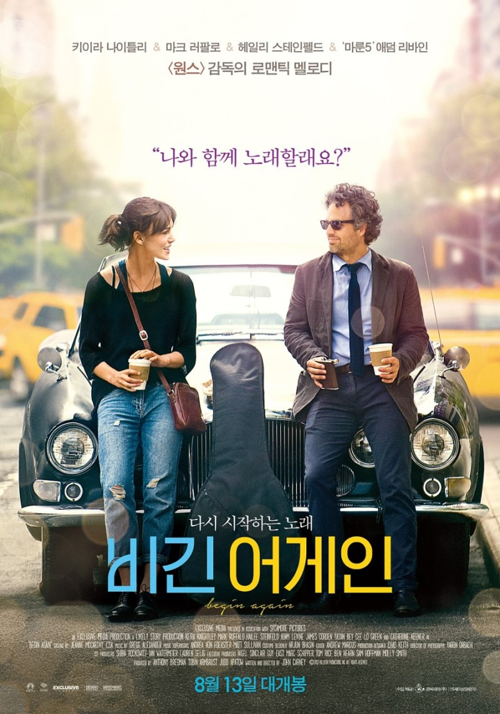
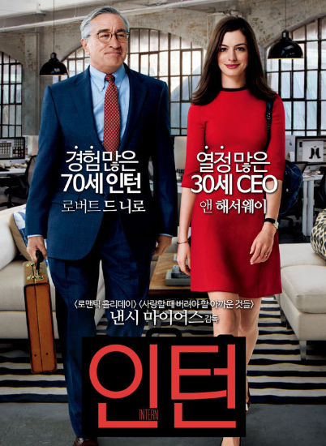

|
내가 뽑은 영화 TOP3
|
|

|
빅쇼트
- 2008년 글로벌 금융위기의 단초가 된 서브프라임 모기지 부실을 예측한 사람들이 월스트리트 은행을 상대로 큰 돈을 벌어들이는 실화를 바탕으로 한 영화.
- 서브프라임 모기지 부실 뿐만 아니라 경제에 대한 지식도 쌓을수 있습니다.
- '빅쇼트'는 서브프라임 모기지 사태의 전후 이야기를 어떠한 첨가물도 넣지 않고 담담하게 그려냈습니다.
경제지식은 물론 그때 당시의 긴장감이 느끼고 싶은 분들께 추천드립니다.
|
|

|
비긴어게인
- 자신이 만든 회사에서 해고 통보를 받은 프로듀서 댄과 싱어송라이터 그레타가 함꼐 음반을 제작하면서 그들의 삶이 밝게 변화하는 모습을 그린 영화.
- 두 남녀의 사랑 이야기가 아닌 성장드라마에 가깝습니다.
- 1.음악이 좋은 영화를 찾는 분들 2.각자의 아픔과 사연을 딛고 일어서는 인물들의 모습을 보며 힐링받고 싶은 분들께 추천드립니다.
|
|

|
인턴
- 70세에 쇼핑몰 인턴으로 입사한 벤이 쇼핑몰 CEO 줄스의 개인비서를 맡으면서 벌어지는 일들을 보여주는 영화.
- 가정과 직장 사이에서 고민하는 여성 직장인들의 고충을 느낄수 있었고, 옆에서 묵묵하게 줄스를 격려하고 떄론 위로하는 벤이 인상적이었습니다.
- 힘든사회에서 격려와 위로가 필요한 분들께 추천드립니다.
|